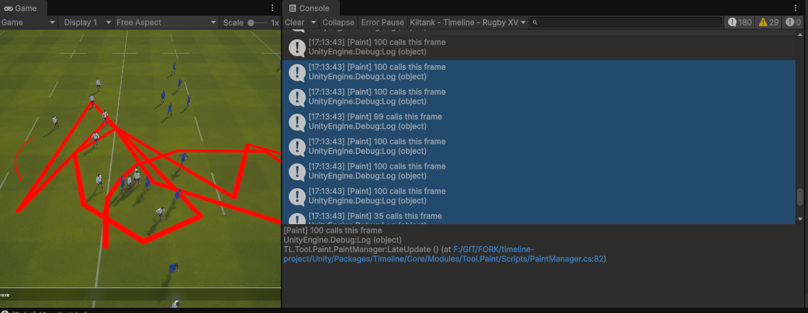
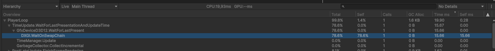
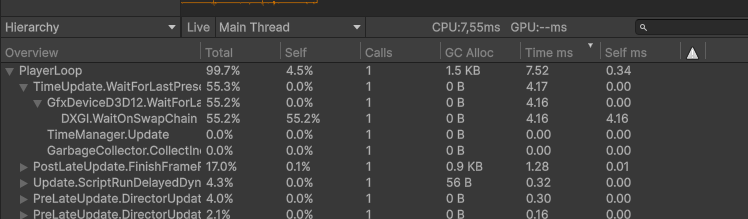

Context
Timeline is a tactical animation tool for rugby XV staff: coaches build, replay and annotate plays on a virtual pitch. The paint module lets the user draw freehand on the field surface in real time, with a brush that follows the mouse cursor and writes into a texture mapped to the ground mesh.
The system works by stamping the brush shape at successive positions along the cursor path. Each stamp is rendered using a custom paint shader and a Unity CommandBuffer (a recorded list of GPU commands). A coroutine interpolates between consecutive mouse positions to draw a continuous stroke even when the cursor moves fast.

Profiler timeline · baseline
Profiler timeline during a stroke, showing the main thread parked on WaitOnSwapChain.
The Problem
The visible symptom was straightforward: painting felt heavy. Frame time during continuous strokes climbed past 30 ms, the brush trail visibly lagged behind the cursor, and the editor preview stuttered. The build behaved the same way, so it was not an editor-only artifact.

Baseline build · console during stroke
Before
Baseline build · the developer console confirms up to 100 paint calls per frame during a stroke. Visible cursor lag.
The Profiler in Hierarchy view confirmed where the time was spent: nearly every frame inside PlayerLoop was dominated by a single deep Camera.Render branch, with two cells that together accounted for almost the entire CPU frame:
CPU main19.93 mstotal
DXGI Wait15.66 ms78% of frame
Paint loop~3.8 msCPU only
Throughput~50 fpsunstable

Profiler hierarchy · baseline
Before
Profiler hierarchy · Gfx.PresentFrame → WaitOnSwapChain burning 15.66 ms.
WaitOnSwapChain at 15.66 ms is not "the renderer is slow", it's the CPU sitting idle, waiting for the GPU to finish the previous frame before swapping the buffers. That signature points to a GPU stall: too many submissions, blocking readbacks, or a memory hazard the driver is forced to serialize.
Diagnosis
The hierarchy already told me the CPU was waiting on the GPU. To find why, I switched the Profiler to Timeline view.
Timeline view · the shape of the wait
Profiler timeline · baseline
Before
The main thread (bottom) is parked on WaitOnSwapChain for most of the frame while the render thread (top) does short bursts of submission.
The timeline confirmed the diagnosis: the GPU could not overlap rendering of frame N with simulation of frame N+1. Classic serialized-submit shape.
Root cause · what was actually happening
Looking at the paint code against the profiler captures, the picture became clear. For every brush stamp, the system issued two separate GPU command submissions in sequence:
- A
CommandBuffer was filled with a draw call writing the brush into the paint texture, then immediately flushed to the GPU.
- A standalone copy operation was issued right after, sending another command to the GPU on a separate command list.
The brush coroutine could fire up to 100 stamps per frame when the cursor moved fast. That meant up to 200 separate GPU submissions per frame, with each pair having a read-after-write dependency the driver had to serialize. The result: command queue saturation, no CPU/GPU pipelining, and a 15 ms WaitOnSwapChain every frame.
Insight
The CPU work itself was cheap. The cost was the shape of the work: many small dependent submissions on a large texture. Fixing the shape, not the work, is what unlocked the GPU.
Hypotheses tested · in order
| Hypothesis | Verdict | Reasoning |
|---|
| Shader is too heavy | Rejected | Each stamp covers a small screen-space area. GPU time per stamp is sub-millisecond. The cost is per-call overhead, not per-pixel work. |
| Texture format too large | Rejected | Tested lighter formats. Saved bandwidth but did not move the needle, the bottleneck was submit count. |
| Coroutine fires too often | Partially | 100 stamps/frame is a real upper bound, but capping it alone did not eliminate the wait. |
| Each stamp issues 2 separate submissions with dependency | Confirmed | Profiler timeline shows two events per stamp on the same texture. Driver must drain between them. |
| Float-precision degenerate stamps | Confirmed | When the mouse barely moves, the interpolation still runs and emits stamps with near-zero distance. Pure waste. |
Approach
With the root causes identified, four fixes were applied in order, each measured independently before keeping it. The principle was the same throughout: reduce the number of dependent GPU submissions per frame, without touching shader output. No visual regression was acceptable.
- Batch the per-stamp work into a single CommandBuffer, biggest win, addresses the shape of the problem directly.
- Cap stamps per frame at 30, eliminates the worst input bursts without affecting visual smoothness.
- Float-precision guard, reject degenerate line segments before they reach the GPU.
- Keep ARGB32, do not downgrade format, profiling showed the bandwidth saving was not worth the quality loss.
Solutions
Each fix below shows the before code with the problem highlighted, the reason it causes the issue, then the corrected version and why it works.
Fix 1: Batch DrawRenderer and Blit in a single CommandBuffer
The dominant fix. The original Paint() emitted two separate GPU submissions per stamp: one to draw the brush onto the paint texture, then a standalone copy to propagate the result. With up to 100 stamps per frame, this produced 200 dependent submissions the driver had to serialize.
Before · PaintManager.cs
internal void Paint(Paintable p, Vector3 pos, ...)
{
RenderTexture mask = p.MaskRenderTexture;
RenderTexture support = p.SupportRenderTexture;
MaterialInstance.SetTexture(TEXTURE_ID, support);
MaterialInstance.SetVector(POSITION_ID, pos);
// ... other SetXxx ...
CommandBuffer.SetRenderTarget(mask);
CommandBuffer.DrawRenderer(p.Renderer, MaterialInstance, 0);
Graphics.ExecuteCommandBuffer(CommandBuffer); // 1st GPU submission
CommandBuffer.Clear();
Graphics.Blit(mask, support); // 2nd GPU submission, separate command list
}
Why this is a problem: Graphics.ExecuteCommandBuffer and Graphics.Blit each flush a separate command list to the GPU. The second one reads from the texture the first one just wrote to, so the driver inserts an explicit synchronization point between them. With 100 stamps per frame, that is 200 submissions and 100 forced serialization points every frame.
After · PaintManager.cs
internal void Paint(Paintable p, Vector3 pos,
Color color, float radius, float hardness)
{
RenderTexture mask = p.MaskRenderTexture;
RenderTexture support = p.SupportRenderTexture;
Renderer renderer = p.Renderer;
MaterialInstance.SetTexture(TEXTURE_ID, support);
MaterialInstance.SetVector(POSITION_ID, pos);
MaterialInstance.SetFloat(RADIUS_ID, radius);
MaterialInstance.SetFloat(HARDNESS_ID, hardness);
MaterialInstance.SetFloat(STRENGTH_ID, ConstantsPaint.TRANSPARENCY);
MaterialInstance.SetColor(PAINTER_COLOR_ID, color);
CommandBuffer.SetRenderTarget(mask);
CommandBuffer.DrawRenderer(renderer, MaterialInstance, 0);
CommandBuffer.Blit(mask, support); // recorded into the same command list
Graphics.ExecuteCommandBuffer(CommandBuffer); // single submission per stamp
CommandBuffer.Clear();
}
Why this works: Both operations are now recorded into the same CommandBuffer before it is submitted. The GPU receives a single coherent command list per stamp and can resolve the read-after-write internally, without needing a CPU-side synchronization point between the draw and the copy. Sequential execution across stamps is still required (each stamp reads what the previous one wrote), but that dependency is now within a single submission rather than between two.
Submits / frame200 → 60-70% from this fix alone
DXGI Wait15.66 → ~5 msisolated measurement
CPU main-4 msless unblock time
Visual diff0bit-identical
Fix 2: ITERATION_PER_FRAME 100 → 30
The brush system interpolates between two consecutive cursor positions to draw a continuous stroke. The interpolation step is fixed (0.1 world units), so a fast mouse motion can produce dozens of stamps in a single frame.
The original code yielded back to Unity every 100 stamps, which capped the per-frame budget but was too lenient: the user was generating up to 100 stamps per frame during normal painting, hitting the cap on every frame. Lowering the cap to 30 stamps before yielding spreads the work across several frames at the cost of at most one extra frame of latency, invisible to the user.
Before · Constants.cs
public const int ITERATION_PER_FRAME = 100;
Why this is a problem: A limit of 100 stamps per frame allows worst-case bursts to reach the GPU in a single frame. Combined with the 2 submissions per stamp (before Fix 1), the queue could receive 200 command lists in one frame.
After · Constants.cs
public const int ITERATION_PER_FRAME = 30;
Why this works: Capping at 30 stamps limits the worst-case GPU workload per frame. The remaining stamps are deferred to the next frame. Combined with Fix 1, peak submissions dropped from up to 200 per frame to around 30, a range where the GPU keeps up without stalling the CPU on WaitOnSwapChain.
Trade-off
The cap adds at most one frame of latency on extreme cursor velocity. Tested on tablet input: no perceived lag, no visible break in the stroke.
Fix 3: Float-precision guard
The interpolation routine builds a list of stamp positions along a line segment between two cursor samples. When the cursor barely moves, the distance between the two samples can be extremely small due to floating-point noise. The original code had no check for this: it would still run the loop and submit stamps for what is effectively a zero-length segment, paying the full GPU cost for an invisible result.
Before · ToolPaint.cs
private IEnumerator PaintBetweenPoints(
Paintable p, Vector3 from, Vector3 to, ...)
{
Vector3 dir = to - from;
float length = dir.magnitude;
dir = dir.normalized; // dangerous if length is near 0 (NaN direction)
// No minimum-distance check: runs even when from == to
for (float i = 0; i < length; i += m_stampSpacing)
{
m_paintManager.Paint(p, from + dir * i, ...);
// ... yield every N ...
}
m_paintManager.Paint(p, to, ...);
}
Why this is a problem: If length is near zero, dividing by it to normalize the direction produces a NaN vector. The loop still runs and emits stamps, sending invalid draw calls to the GPU. This wastes GPU submissions and can produce undefined rendering results.
After · ToolPaint.cs
private IEnumerator PaintBetweenPoints(
Paintable p, Vector3 from, Vector3 to, ...)
{
Vector3 dir = to - from;
float length = dir.magnitude;
if (length < 0.001f)
yield break; // skip if positions are essentially identical
dir = dir.normalized;
for (float i = 0; i < length; i += m_stampSpacing)
{
m_paintManager.Paint(p, from + dir * i, ...);
// ... yield every N ...
}
m_paintManager.Paint(p, to, ...);
}
Why this works: The early return skips the entire stamp sequence when the two cursor samples are too close to produce a visible result. This removes a class of wasted GPU submissions that occurred whenever the user held the mouse still, and also prevents the NaN direction vector that would otherwise be passed to the shader.
Results
Numbers below were captured on the same scene, same input pattern (continuous brush stroke for 5 seconds), same hardware, in standalone build.
CPU and GPU sync
| Metric | Before | After | Delta |
|---|
| CPU main thread | 19.93 ms | 13.18 ms | -6.75 ms (-34%) |
| DXGI WaitOnSwapChain | 15.66 ms | 4.16 ms | -11.50 ms (-73%) |
| Build frame time | ~20+ ms (spiky) | 7.55 ms (stable) | -62% · +165% fps |
| GPU submits / frame (peak) | ~200 | ~30 | -85% |
| FPS (build) | ~50, unstable | 133, stable | +165% |
Profiler captures · after

Profiler hierarchy · after
After
Gfx.PresentFrame → WaitOnSwapChain dropped from 15.66 ms to 4.16 ms.
Profiler timeline · after
After
Timeline view · main thread no longer parked. Render thread overlapping cleanly with simulation.

Final build · 133 fps stable
After
Final build · 133 fps stable during continuous painting. Cursor lag gone.
Conclusion
The whole investigation is a clean illustration of a principle worth restating: on modern GPUs, the cost of a render operation is rarely what you write, it's how the driver sees it. The shader was fine, the texture was fine, the algorithm was fine. The submission pattern was not, and that single dimension of the system explained 14 ms of lost frame time.
What I'd do the same way again
- Read the profiler before touching the code. The
WaitOnSwapChain signature pointed at the family of root causes within the first minute. Anything I'd done before reading it would have been guessing.
- Reject hypotheses, even tempting ones. Format downgrade looked free. It wasn't worth it. Profiling each candidate fix in isolation kept the final patch surgical.
What I'd do differently
- Add a profiler marker around the paint call from day one. There was no named scope on the brush path. A 30-second addition would have shortened the diagnosis by half.
- Fold standalone copy operations into the surrounding command list.
Graphics.Blit is convenient but always flushes a new command list immediately. On any per-frame loop where a CommandBuffer is already open, that copy belongs inside the same buffer, not after it.
Takeaways
- WaitOnSwapChain above 5 ms: look at submit count, not at shader cost.
- Two GPU operations that read each other's output should always live in the same
CommandBuffer.
- Float-precision guards on input-driven code paths cost nothing and remove a class of bugs.
- Format optimization is a last resort, not a first instinct.
Project: Timeline · Gambas Studio Application · Unity 6 · URP · D3D12 · 2026.